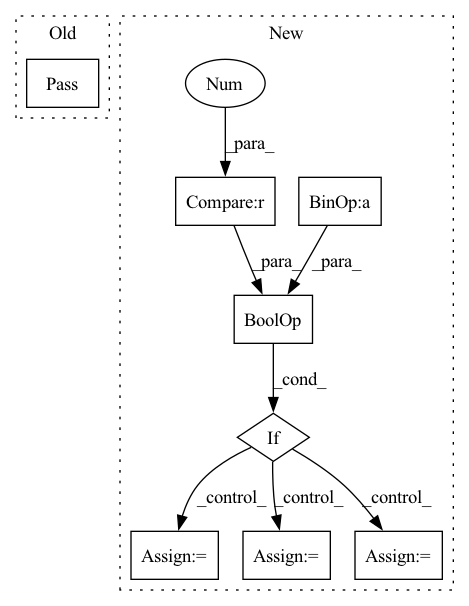

Pattern ID :12774
Before Change
train_loss += loss
if metrics:
pass
// metrics.update(output, y_batch)
// train_acc += metrics.result()
// metrics.reset()
else:After Change
if test_dataset:
// use training and evaluation sets to evaluate the model every print_freq epoch
if epoch + 1 == 1 or (epoch + 1) % print_freq == 0 :
network.set_eval()
val_loss, val_acc, n_iter = 0, 0, 0
for X_batch, y_batch in test_dataset:
_logits = network(X_batch) // is_train=False, disable dropout
val_loss += loss_fn(_logits, y_batch, name="eval_loss")
if metrics:
metrics.update(_logits, y_batch)
val_acc += metrics.result()
metrics.reset()
else:
val_acc += (_logits.argmax(1) == y_batch).type(torch.float).sum().item()
n_iter += 1
print(" val loss: {}".format(val_loss / n_iter))
print(" val acc: {}".format(val_acc / n_iter))In pattern: SUPERPATTERN
Frequency: 3
Non-data size: 8
Instances Fragment ID: 43259029
Project Name: tensorlayer/tensorlayerx
Commit Name: 5a055c7e44c1c45757261cf1af36bbd6d37b80e0
Time: 2022-03-07
Author: laicheng_vip@163.com
File Name: tensorlayerx/model/core.py
M Class Name: Model
N Class Name: Model
M Method Name: th_train(11)
N Method Name: th_train(11)
M Parent Class:
N Parent Class:
M File Name: tensorlayerx/model/core.py
N File Name: tensorlayerx/model/core.py
M Start Line: 439
M End Line: 439
N Start Line: 431
N End Line: 481
Before Change
loss = -vloss1 + 1e-4 * vloss2
if mask_loss > self.max_troj_size:
pass
ssim_loss = - self.ssim() // todo
ssim_loss *= 10 if ssim_loss < -2 else 10000
loss = -vloss1 + 1e-5 * vloss2 + 1e-3 * tvlossAfter Change
if use_mask:
mask_loss = mask.sum()
mask_nz = len(mask.nonzero())
if (self.count_mask and mask_nz > (math.sqrt(self.max_troj_size) + 2)**2) \
or (not self.count_mask and mask_loss > 100) :
mask_loss *= 2 * self.remask_weight
elif (self.count_mask and mask_nz > self.max_troj_size) \
or (not self.count_mask and mask_loss > self.max_troj_size):
mask_loss *= self.remask_weight
else:
mask_loss = 0.0
loss = -vloss1 + 1e-4 * vloss2 + mask_loss
else:
tvloss = total_variation(mark) Fragment ID: 43259060
Project Name: ain-soph/trojanzoo
Commit Name: 1684c28ef38502abb83d37beb845b69007e33274
Time: 2020-07-07
Author: ain-soph@live.com
File Name: trojanzoo/defense/backdoor/abs.py
M Class Name: ABS
N Class Name: ABS
M Method Name: abs_loss(7)
N Method Name: abs_loss(7)
M Parent Class: Defense_Backdoor
N Parent Class: Defense_Backdoor
M File Name: trojanzoo/defense/backdoor/abs.py
N File Name: trojanzoo/defense/backdoor/abs.py
M Start Line: 231
M End Line: 252
N Start Line: 260
N End Line: 283
Before Change
@abstractmethod
def get_centroid_documents(self):
Get the centroid documents.
pass
After Change
self.centers = self.get_centers()
if not hasattr(self, "vector_fields") or len(self.vector_fields) == 1 :
if isinstance(self.centers, np.ndarray):
self.centers = self.centers.tolist()
centroid_vector_field_name = self.vector_fields[0]
return [
{
"_id": self._label_cluster(i),
centroid_vector_field_name: self.centers[i],
}
for i in range(len(self.centers))
]
// For one or more vectors, separate out the vector fields
// centroid documents are created using multiple vector fields
centroid_docs = []
for i, c in enumerate(self.centers):
centroid_doc = {"_id": self._label_cluster(i)}
for j, vf in enumerate(self.vector_fields):
centroid_doc[vf] = self.centers[i][vf]
centroid_docs.append(centroid_doc.copy()) Fragment ID: 43259024
Project Name: relevanceai/relevanceai
Commit Name: d2d65795b842106721c1ccc2979229b1cbb73069
Time: 2022-01-26
Author: jacky2wong@gmail.com
File Name: relevanceai/clusterer/cluster_base.py
M Class Name: CentroidClusterBase
N Class Name: CentroidClusterBase
M Method Name: get_centroid_documents(1)
N Method Name: get_centroid_documents(1)
M Parent Class: ClusterBase,ABC
N Parent Class: ClusterBase,ABC
M File Name: relevanceai/clusterer/cluster_base.py
N File Name: relevanceai/clusterer/cluster_base.py
M Start Line: 199
M End Line: 199
N Start Line: 243
N End Line: 264